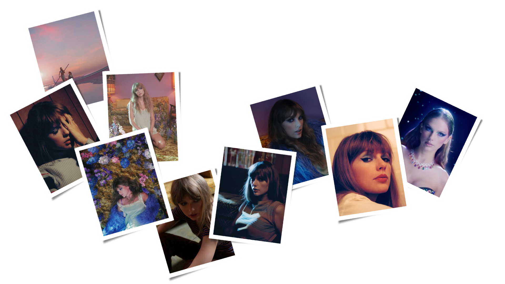

Midnights Map
My style is called Midnights (Brynn's Version) and is based on Taylor Swift's grammy award-winning album titled Midnights.

For inspiration, I referred to Swift's Midnights album cover variants, music videos, and promotional materials.
This lead me to use the above color palette as the basis for my design- drawing from the analogous color scheme of blues, purples, and reds.
For the map's form, the album uses clean lines, which I kept mostly consistent for this map.
In cases where I wasn't consistent, I tried to embody the blurry-ish, hazy form, inspired by the song on the album, Lavender Haze.
This is found in two places: the city labels have a light purple halo- dark enough to be legible, but light enough to feel hazy, and
admin-1 boundaries, using a lighter version of the boundary purple color.
Also related to form, and inspired by a song on the album named Bejeweled, I used jewel iconography for some point features.
The gold gem acts as a shield would, for road labeling.
The diamond serves as symbology for points of interest.
Luckily for me as the designer, Midnights uses the font family "Helvetica," which is well-established with various styles. I used Helvetica as the type for this map.
For texture, I was limited by the capabilities of Mapbox. In an ideal scenario, I would try to
apply the gradient effect that she uses across all her Midnights album variants.
More detail is revealed as you zoom in, including the jewel icons and previously hidden layers.


Swift mentions various cities in her songs, let's check some of them out. Starting with...
🎶 Karma is the guy on the Chiefs, coming straight home to me 🎶
-Karma (live)
🎶 So you work your life away just to pay for a time-share down in Destin 🎶
-Florida!!!
🎶 For so long, London. Stitches undone. Two graves, one gun. I'll find someone. 🎶
-So Long, London
🎶 I was taken by the view like we were in Paris 🎶
-Paris
🎶 I'd be just like Leo in St. Tropez 🎶
-The Man
🎶 Flexing like a Vegas acrobat, me and karma vibe like that 🎶
-Karma
🎶 Those Windermere peaks look like the perfect place to cry 🎶
-The Lakes
Check out the full map!
Credits:
Map created with Mapbox Studio
Data from openstreetmap
Midnights Photoshoot: https://taylorswift.fandom.com/wiki/Midnights_photoshoot
Jewel Icons: Flaticon/Freepik https://www.flaticon.com/packs/diamonds-and-gems-13?word=jewel
Font Image: Proof Positive
All other Midnights material is owned by Taylor Swift.